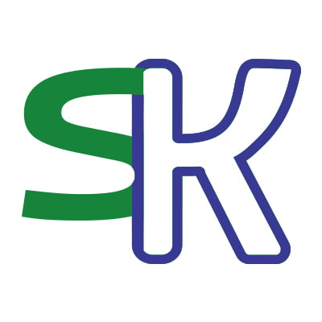
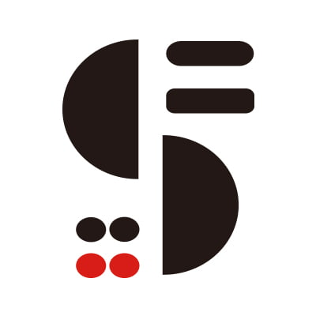
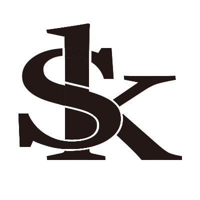

概要
鈴木建設様のロゴタイプ、ロゴマークを3パターン制作
担当範囲と作業時間
企画・コンセプト立案(5h)、ロゴマークのデザイン、名刺デザイン（15h）
使用ツール
Illustrator、Photoshop
A案

鈴木建設様のイニシャルである「S」と「K」をモチーフにしています。
緑と青は自然の「森」や「川」を連想させ、環境との調和を大切にする姿勢を示し、
角を丸くしたデザインは、建設における「強固さ」と「優しさ」を両立し、単に建物を建てるだけでなく、そこで暮らす人々の快適な生活と未来にわたる地球環境への貢献を目指す企業理念を表現しています。
B案

鈴木建設様の頭文字である「S」をモチーフに、力強く洗練されたイメージを構築しています。
上半分と下半分が分かれた「S」の形状は、建設物の「構造」や「連結」を象徴しています。上部と下部がしっかりと結びつき、強固な基盤の上に未来を築き上げていく鈴木建設様の信頼性と安定感を表現しています。黒はプロフェッショナリズムと基盤となる強さを、赤は情熱と活力を表しています。
C案

鈴木建設様のイニシャルである「S」と「K」を組み合わせ、大手建設会社にふさわしい「信頼」と「安心」を表現しています。シンプルかつインパクトのあるデザインで、確固たるブランドイメージを築くことを目指しました。 太く、力強いフォントを使用することで、重厚感と信頼性を演出しています。